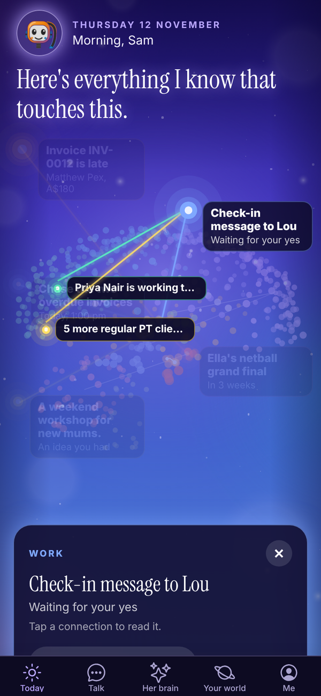
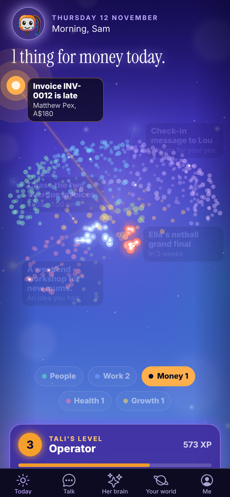

Tali HQ guide
Today and your morning brief
Her brain with your day as stars, the lens, your morning brief, what's due and your numbers at a glance.
Today is the first screen you see. It opens on Tali's brain, with your day around it as stars: what's due, what needs your yes, who to get back to. Under her brain are your lists for the day and your numbers. Pull down on the screen at any time to refresh it.

Her brain and your stars#
At the top are the date, your greeting (Morning, Afternoon or Evening, with your first name) and, during a trial, how many days you have left.
Every dot in her brain is something she knows. The bright stars around it are today: a late invoice, a draft waiting for your yes, an email, something due, a birthday coming up, an idea.
- Tap a star to open it. A card shows what it is, what it connects to in her brain, and one thing to do, like Open email, Plan it with her or Talk it through.
- Tap a connection on the card to read that memory.
- Done with this shows on ideas and dates she is reminding you of. It takes that one off Today so the next one gets its turn. She still remembers it.
- Tap her brain to step inside. See Her brain.
- Tali's line under her brain sums up the page, like "3 things need you. I've got the rest." When nothing is on, she says "All quiet. Tell me anything."

The lens#
Under her brain are five chips: People, Work, Money, Health and Growth. Tap one and Today follows it. The stars, her line and the sections below show only that part of your life, and the matching parts of her brain light up. Tap the chip again to see everything.

Tell her something#
The box under the chips is the quickest way to tell Tali something. Type it and send, and it opens in Talk. With a lens on, the box reads "Tell her about money..." and so on.
Tali's level#
The TALI'S LEVEL card shows her level, its name and her XP, with a bar to the next level. She levels up as she learns about you. See Her brain.
Your morning brief Tali HQ#
Every morning at the time you pick, Tali writes your brief: what's on your calendar and the free gaps (when connected), emails that need you, reminders and follow-ups due, unpaid or overdue invoices, anything in your business health worth a look, what's waiting for your yes, today's training session if you have a plan, and one nudge.

- Tap Read your morning brief under her brain. It shows once today's brief has landed.
- The brief opens with its headline and the first three lines. Tap Show all to see the rest.
- Tap Got it once you've read it. It then counts as read. Hide your brief folds it away without marking it read.
Pick your brief time in Me, Settings, under Morning brief time: any half hour from 5:30am to 9:00am. Each brief uses 1 credit.
She learned this week#
When Tali has kept new memories in the last week, a She learned this week card lists the newest ones. Tap Everything she knows to open her brain.
An idea from night school Pro#
After a night of study, Tali may leave one idea on Today under AN IDEA FROM NIGHT SCHOOL, with why she thinks it suits you. Tap Let's try it to open Talk with the idea ready and save it to her brain, or Not for me to hide it. See Night school and Rules.
Needs you#
Anything Tali has drafted for you, like a message, an email, an invoice or a booking, waits here. Tap a draft to open it, then copy it, send it, ask Tali to rework it, or tap Not needed. Full details are on Approvals.
When an email needs you (forwarded from your Gmail, from Outlook, or sent to Tali's own address on Pro), a card at the top of this section says who it's from. Tap it to open Email. See Gmail and Outlook. Tali HQ
Due today Free#
Reminders and client follow-ups that are due today (or overdue) show here.

- Tap the circle to tick a reminder or follow-up off.
- Under a reminder, tap Tomorrow to move it to 9am tomorrow, or Delete to remove it. Delete asks "Sure?" first, so tap again to confirm.
- Tap a follow-up to open that person. See Your people and dates.
Add a reminder yourself#

- Tap + Add a reminder under Due today.
- Type what to remind you about, for example "Chase Lou about his invoice".
- Pick a time: In an hour, This arvo (3pm, or an hour from now if it's already past 3), Tomorrow 9am, Monday 9am or Next week.
- Tap Remind me.
Adding reminders yourself is free and uses no credits. You can also just tell Tali in Talk: "remind me to call Zack on Friday at 10".
If notifications are on, Tali sends a short notification when a reminder is due.
At a glance#
Up to four tiles with one number each. Tap a tile to slide its full card up from the bottom, and tap Close to put it away.


- Money Tali HQ: what's late, or your runway, or cash in this month. See Money.
- Health Tali HQ: your business health. Only shows if you run a business. "All good" or how many things need a look. See below.
- This week Tali HQ: how many of your three promises for the week are done, or that your weekly review is due. See Goals and weekly review.
- Goals Tali HQ: how far along your first goal is.
Tiles only show when there is something in them.
Business health Tali HQ#
Tali checks your business for these, every time you open Today:
- invoices that are overdue (red once the oldest is more than 14 days late)
- client follow-ups that are overdue (red when there are more than 3)
- active clients with no contact in 2 weeks
- new leads with no follow-up set after 2 days
- drafts waiting for your yes more than 2 days
- reminders overdue by more than a day
Twice a day, once in the morning and once in the evening (Sydney time), if anything is amber or red, Tali sends you one notification about it (at most once every 12 hours).
More from Tali#
The quieter things live in a row of chips at the bottom. Tap one to open it.

- Calendar Tali HQ: today's events and free gaps from your connected Google or Outlook calendar.
- Your day Free: food, training and weight. See Food and training.
- Tali noticed Pro: this month's patterns. See Her brain.
- Decisions Free: your latest decision. See Decisions.
- Earlier notes Free: older briefs, health checks and Friday check-ins. Tap one to read it in full.
Meeting nudge Tali HQ#
With a calendar connected, if one of today's events matches a client (their email is on the invite, or their name is in the title), Today shows "Meeting" with that person, the time, and the top things Tali knows about them.
In the evening#
From two hours before your shutdown time, a Shut the day down card appears on Today with Start. The sky behind the app also changes through the day: lighter by day, fading into her night sky over the two hours before your shutdown time.
Once the day is closed, Today is only her brain, turning slowly, her goodnight line, and two buttons: Sleep sounds and Write in your journal. Your lists come back in the morning. See Shut the day down and night mode.
Questions#
Why don't I see a morning brief?
The daily brief is part of the paid plans (and the trial). It lands at the time set in Settings, so if it's earlier than that, it isn't there yet. On Free you get a Friday check-in instead.
Can I change when my brief arrives?
Yes. Me, Settings, Morning brief time, pick a time, then tap Save.
Does ticking off a reminder cost credits?
No. Reminders, ticking things off and adding reminders yourself never use credits.
What does "This arvo" mean?
3pm today. If it's already past 3pm, it sets the reminder for an hour from now.
What are the stars around her brain?
Each star is something from your day: a late invoice, a draft, an email, something due, a date coming up or an idea. Tap one to open it.
I tapped a chip and half of Today disappeared.
That's the lens. Tap the same chip again (People, Work, Money, Health or Growth) to see everything.
I tapped Done with this by mistake.
It only takes that idea or date off Today on this device. Tali still remembers it, and you can find it in Her brain or under Dates that matter.
Why is a tile missing from At a glance?
Tiles only show when they have something to say, and Money, Health, This week and Goals are Tali HQ features. With no goals, there is no Goals tile.
How do I get rid of a reminder I don't need?
Tap Delete under it, then tap again when it says Sure?.